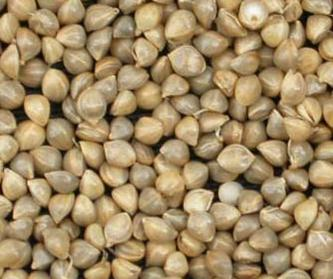

KUDIRAIVALI (Barnyard Millet)
Echinochloa frumentacea
 |
 |
| Panicle | Grain |
Barnyard millet is a grain crop of lesser importance. It is very drought resistant but is also capable of withstanding water logging conditions. It is generally grown as a rainfed crop. Kudiraivali grains are consumed just like rice. They are also used in making rice pudding (kheer). The digestibility of protein is 40 per cent. The grain is eaten mostly by the poor classes, but sometimes it is brewed the beer. It is also used as feed for cage birds. The straw makes good fodder for cattle. Its green fodder is very much relished by cattle.
Origin and History: There is a mention of barnyard millet in ancient literature of India. It has been cultivated in China for more than 2000 years. Some of the investigators think that barnyard millet probably originated somewhere in central Asia. It spread from central Asia to Europe and America.
Area and Distribution: Barnyard millet is grown in India, China, Japan, Malaysia and East Indies. In China and Japan it is said to be grown as a substitute crop when the rice crop fails. It is also to some extent in Africa and United States of America. In India it is grown in Madhya Pradesh, Uttar Pradesh, Tamil Nadu, Andhra Pradesh, Karnataka, Maharashtra and Bihar.
Botanical Description: It is an herbaceous annual which tillers sparsely. Plant grows up to a height of 60 to 120 centimetre. The roots are fibrous and shallow. Stem is slender. Leaves are flat, glabrous or slightly hairy without ligule. The inflorescence is a panicle with densely crowded unawned spikelets. Spikelets are densely packed in three to five rows. The spikelets are subsided by two glumes within which there are two florets. Colour of the glume varies from white to red. The caryopsis remains enclosed in the lemma and palea. Colour of the grain is generally yellow or white.
SEASON AND VARIETIES
Crop Districts grown Kudiraivali Salem, Namakkal, Dharmapuri, Krishnagiri, Coimbatore, Tiruchirapalli, Perambalur,Karur, Pudukottai, Madurai, Dindigul, Theni, Ramanathanpuram, Tirunelveli and Thoothukudi.
Season Variety Rainfed a) September-October CO 1, CO(KV)2 Irrigated a) February-March CO 1, CO(KV)2
MORPHOLOGICAL DESCRIPTION
| PARTICULARS | CO 1 | CO(KV) 2 |
| Parentage | Pure line selection from Coimbatore local | Pure line selection from EF 79 |
| Duration (days) | 75 | 95 |
| Pigmentation | Green | Green |
| Tillering ability | High | High |
| Panicles | Loose | Compact, Pyrimidal |
| Grain Character | Yellow | Brownish grey |
| Grain Yield (kg/ha) | ||
| Rainfed | 1750 | 2650 |
| Special features | No major diseases noted | Good grain quality |
CROP MANAGEMENT Climatic Requirements: Barnyard millet is a drought tolerant crop and hence is grown as a rainfed crop. It can be grown successfully under partially water logged conditions. It is grown from sea level to an altitude of 2000 metres on the Himalayan slopes. Warm and moderately humid climate is good for raising barnyard millet crop. It is a hardy crop and is able to withstand adverse conditions of weather better than other cereals. Soil: Barnyard millet is generally cultivated in soils of marginal fertility. It can be grown in partially water logged soils such as low lands on the banks of rivers etc. But it thrives best on sandy loam to loam soil having sufficient amount of organic matter. Gravely and stony soils with poor fertility are not suitable for raising barnyard millet crop. Field Preparation: Since it is cultivated in very light and marginal soils, the land is given only a limited preparatory cultivation. Two ploughings with local plough or harrowing followed by planking are sufficient to prepare the seedbed for barnyard millet. Seed and Sowing: Barnyard millet can be sown in the first fortnight of July with the onset of monsoon rains. The seed is broadcast or drilled in furrows 3-4 centimetre deep at the rate of 8-10 kg per hectare. Transplanting is also done in some places in Maharashtra. It is always better to sow it in rows 25 centimetre apart. In flood affected areas, it is sown with the first showers of rain by broadcast method and harvested before the flood may come. Manures and Fertilisers: Farm yard manure of compost at the rate of 5 to 10 tonnes per hectare should be added for boosting the yield. It can be supplemented with 40 kg nitrogen, 30 kg P2O5 and 50 kg K2O per hectare. All the fertilizer should be added in the soil at the time of sowing. If irrigation facilities are available, half of the nitrogen should be top dressed in standing crop after 25-30 days of sowing. Water Management: Generally barnyard millet does not require any irrigation. However, if dry spell prevails for a long period, then one irrigation must be given at the time of panicle initiation stage. It is always better if excess water of heavy rains is drained out of the field. Weed Control: The field should be kept weed free up to 25-30 days after sowing. Two weedings are sufficient to control the weeds in barnyard millet field. Weedings may be done with hand hoe or wheel hoe in line sown crop. DISEASES Downy Mildew: It is caused by a fungus. Sometimes it may cause severe damage to the crop plants. In the beginning the light yellow bands are seen on the leaves which in due course of time become white. Later on leaves start drying and in case of severe infection earheads become chaffy. Remove the infected plants and destroy them. Use seed from healthy plants only. Smut: It is also caused by a fungus. The affected panicles are full of black masses instead of grains. This is a seed-borne disease and can be controlled by treating the seed with Agrosan G.N. or Ceresan at the rate of 2.5 g per kg of seed of hot water treatment (soaking seed in hot water at 550C for 7-12 minutes). Rust: It is caused by a fungus. Black spots are seen in lines on leaves. It causes considerable reduction in grain yield. Spray of Dithane M-45 at the rate of 2 kg in 1000 litres of water per hectare may check the spread of this disease. Insect Pests: Stem borer can be controlled by applying 15 kg Thimet granules per hectare. Harvesting and Threshing: The crop should be harvested when it is ripe. It is cut from the ground level with the help of sickles and stacked in the field for about a week before threshing. Threshing is done by trampling under the feet of bullocks. Yield: The average yield of grain is 400 to 600 kg per hectare and that of fodder or straw around 1200 kg per hectare. With improved package of practices it is possible to harvest 10-12 quintals of grain per hectare. |
Source: Chhidda Singh, Book entitled “MODERN TECHNIQUES OF RAISING FIELD CROPS “oxford & IBH Publishing Co. Pvt. Ltd, New Delhi. |